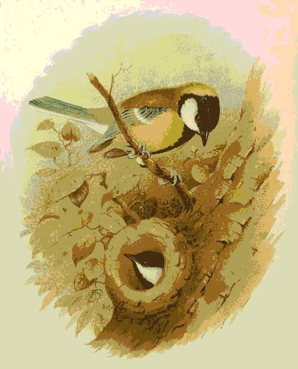
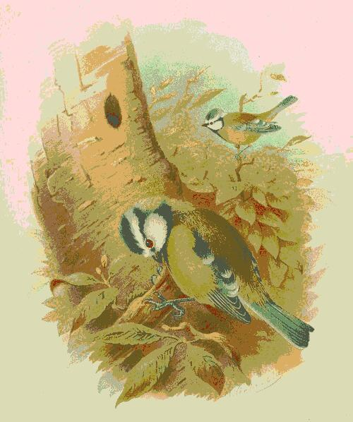

nidification, nourrissage, nichoirs. France, sources LPO.


nourrir nidification (pâle : début / fin) nettoyer le nichoir poser un nichoir (pâle : possible)
| mangeoire | nid | nichoir | quoi faire | |
|---|---|---|---|---|
| jan | Mangeoire pleine tous les jours. Eau non gelée. Pose du nichoir encore possible. | |||
| fév | Les mésanges repèrent leur site de nid. Dernier moment pour poser un nichoir. | |||
| mars | 1er : début de présence, plus de travaux. Fin : retirer les mangeoires (début avril si gel). | |||
| avr | Charbonnière et bleue nichent. Pas de nourrissage. Ne pas ouvrir le nichoir. | |||
| mai | Les parents nourrissent les poussins (insectes). Ne pas déranger. | |||
| juin | Idem. Rien à faire, regarder. | |||
| juil | Fin de nidification (bleue). Charbonnière jusqu'à août. | |||
| août | 10 : fin de la période de présence. Travaux (élagage, façade) de nouveau possibles. | |||
| sept | Nettoyer les nichoirs (vider, brosser à sec). | |||
| oct | Nettoyer ou poser les nichoirs. Préparer les mangeoires. | |||
| nov | Mi-nov : début du nourrissage. Nichoir posable jusqu'au début de l'hiver. | |||
| déc | Mangeoire, tournesol, cacahuètes non salées. Rien au sol. |